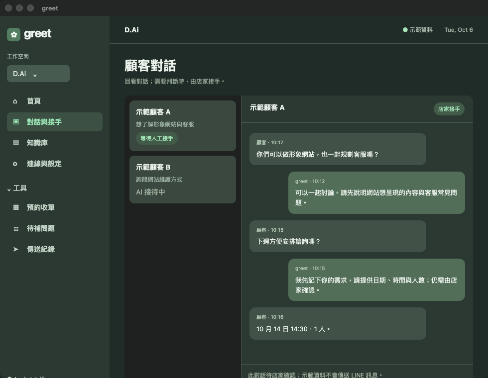
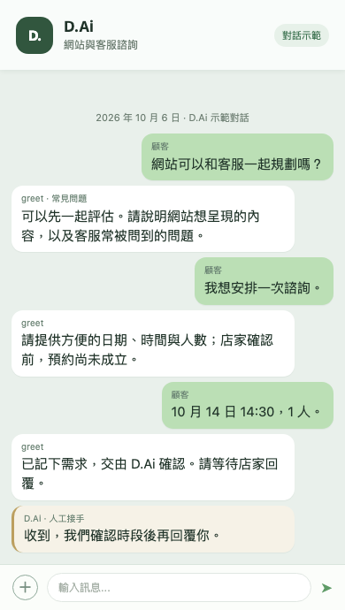

打開工作台，看見每一步。
把前後文交到人手上
在對話列表回看顧客訊息與接待狀態；需要判斷時由店家接手，AI 暫停這段對話。

示範畫面 · D.Ai點開看大圖 ↗
對話示範
從詢問到接手，
顧客知道下一步。
先回答已整理的問題，再收集諮詢日期、時間與人數。這是預約需求；店家確認前，時段尚未成立。
- 顧客詢問網站與客服
- greet 引導說明需求
- 店家接手並確認時段


使用環境與導入條件
本機 App 需要 macOS 27 或以上；本機 AI 功能需要支援 Apple Intelligence 的 Mac，並完成模型設定。LINE 串接與實際回覆需依店家環境驗收，導入方式依需求評估。